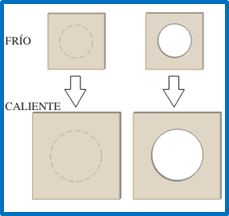

EXPANSION LINEAL
La expansión térmica lineal es el cambio en una dimensión de un material debido a una variación en la temperatura.
\( \Delta L=\alpha L_{0}\Delta T \)
Donde alfa es el coeficiente de expansión lineal y depende del material, L0 es la longitud inicial y delta de t es la variación
de temperatura. Esta fórmula aplica para para
cualquier dimensión así L

podría ser el espesor de una varilla, la longitud del lado de una lámina cuadrada o el diámetro de un agujero.
EXPANSION VOLUMÉTRICA
La expansión térmica volumétrica se refiere al cambio en el volumen de un material como resultado de una variación en la temperatura.
\( \Delta V=\beta V_0 \Delta T \)
Donde beta es el coeficiente de expansión volumétrica y depende del material, V0 es el volumen inicial y delta de t es la variación de temperatura.
Además, para materiales sólidos se cumple que:
\(\beta = 3\alpha \)
ESFUERZO TÉRMICO
El esfuerzo térmico es la tensión desarrollada en un material con el fin de evitar su expansión o comprensión debido a cambios en la temperatura, estos esfuerzos pueden llevar a deformaciones si no se permite la expansión o comprensión libre.
\( \frac{F}{A}=-Y\alpha \Delta T \)
Donde de lo nuevo F es la fuerza aplicada, Y es el módulo de Young y A el área transversal del objeto
CALORIMETRÍA
La calorimetría es la ciencia de medir la cantidad de calor transferido hacia o desde un objeto. Ahora se proporciona algunos conceptos.
CALOR SENSIBLE
La cantidad de calor es la energía térmica transferida de un sistema a otro, generalmente medida en julios o calorías.
\( Q=mc \Delta T \)
\(Q=nC\Delta T \)
Donde m es masa, n es número de moles c es calor especifico, C es calor especifico molar y Q calorías.
CALOR DE TRANSFORMACIÓN (CAMBIO DE BASE)
Es la cantidad de calor necesaria para cambiar la fase de una sustancia sin cambiar su temperatura, como la fusión/solidificación o vaporización/condensación.
\(Q=\pm mL \)
Donde L es calor latente y el signo expresa si está perdiendo o recibiendo calor.
BALANCE DE CALOR
El balance de calor implica calcular el intercambio de calor en un sistema para entender cómo se distribuye la energía térmica, solo basta recordar que no hay transferencia de calor en un equilibrio térmico es decir que el Q total es cero.